|
||||||||||||||||||||
|
09/07/2017 - Laure est arrivée English Abstract Ca faisait 3 années - 3 longues années! - que Syr Daria attendait ce moment: Laure, sa meilleure amie, est arrivée en droite ligne de Belgique! Elles se connaissent depuis la maternelle et se sont longuement enlacées à la sortie de l'aéroport.
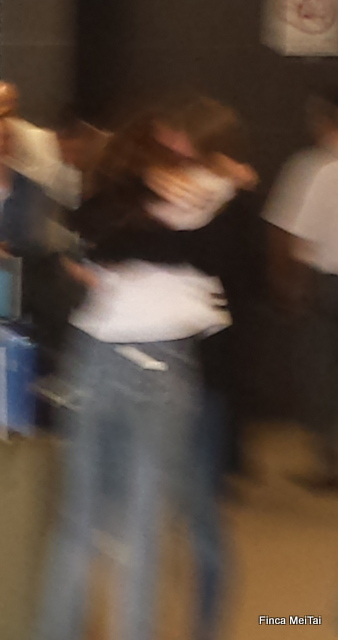 C'était tellement émouvant que la caméra était confuse. Depuis que Laure est arrivée, le soleil brille, tous le monde est gentil (même Kenya), les mathématiques sont agréables et les politiciens sont honnêtes. Euh non, quand même pas, restons crédibles. Quoi qu'il en soit, Syr Daria est très heureuse de présenter son pays d'adoption à Laure, ses us et coutumes, sa gastronomie réputée jusqu'au Pecos, et son fameux Monopoly. Elle l'a même emmenée à la plage, c'est dire...
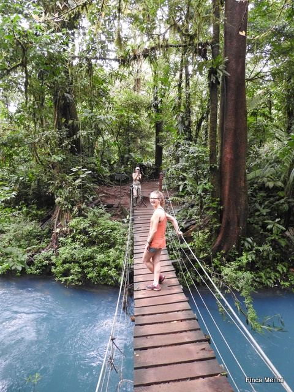 Laure dans la jungle sauvage du Parc Tenorio Quant à la finca, tout se passe à merveille en ce mois de Juillet (mois assez pluvieux cette année, pauvre Laure). La chambre Orange est replanchée (et c'est assez bien réussi, en temps et qualité), le plafond lambrissé de la troisième maisonnette est presque terminé, les nouveaux arbustes de cacao se plantent régulièrement et les 7 travaux de Sidney s'achèvent triomphalement (ce sont les 7 bancs qu'il a construit pour l'école, grâce à mon aide au début, pratiquement seul à la fin).
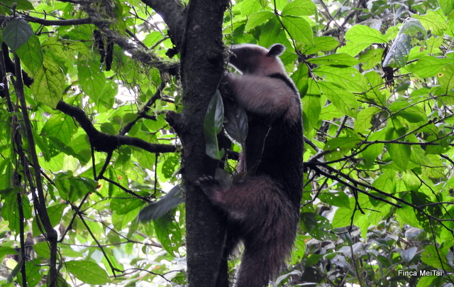 Les fourmiliers montent aux arbres! Cela m'a laissé un peu de temps pour penser au remplacement du bois que je destinais justement au plancher de la 3eme habitation et que nous avons placé dans les 2 premières. J'ai réussi à convaincre le bûcheron de tronçonner un arbre tombé sur les hauteurs de la finca durant l'ouragan et 2 muchachos de me ramener les planches de 20cm sur 260cm par le sentiers et non pas à travers tout comme ils le souhaitaient. Oscar, le bûcheron, est très habile avec sa tronçonneuse de compet' mais il a tendance, un peu comme tout le monde, à vouloir faire comme on a toujours fait: des lattes de 10cm. 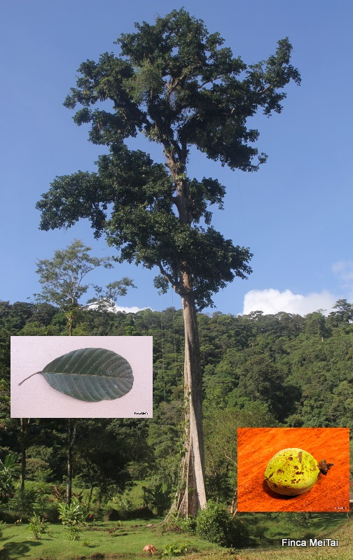 Le Sloanea presque javanica En parlant d'arbre, j'ai fait de gros progrès dans l'enquête que je mène pour savoir QUI est le grand arbre qui trône au milieu de la finca. J'ai trouvé un fruit (en fait y en avait un paquet) que je me suis empressé d'emmener sur Internet. Je sais depuis un an et l'avis d'un chercheur à l'Institut des Plantes Tropicales que l'arbre en question est de la famille des Sloanea, qui inclut toutefois plus de 150 espèces. Grâce au fruit, j'espérais identifier le mien et, de fait, j'ai trouvé un bon candidat: Sloanea javanica. Très semblable mais dont l'habitat se situe en Asie du Sud-Est, puis les feuilles sont pas tout-à-fait pareilles. Bref, je continue mes investigations...
Nos aventures sont enfin disponibles en format électronique!! Et le Site Commercial: www.Finca-MeiTai.com |
||||||||||||||||||||
|
20/06/2017 - On recommence English Abstract Une fois de plus, j'ai été un peu paresseux sur le plan littéraire et j'ai laissé en plan mes fidèles lecteurs (merci à vous deux!!). Il faut dire que la saison basse nous laisse sans visiteurs, ce qui nous permet enfin de travailler sans être dérangés.
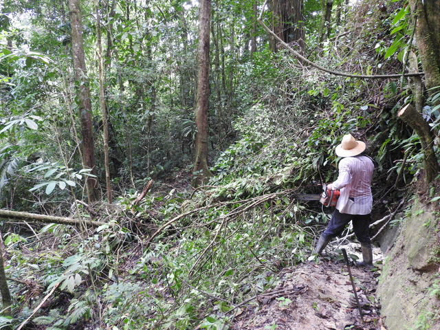 Un arbre est tombé en travers du chemin et j'avais justement ma tronçonneuse avec moi. Outre la réalisation bien avancée de la troisième maisonnette pour les visiteurs, nous avons entamé la réfection de la première maisonnette, dont le sol en bois montrait des signes de fatigue. Il aura tenu un peu moins de deux ans...
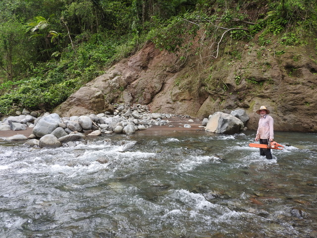 Pas de pont, on traverse à gué (oui, oui, c'est moi en costume de travail) Depuis quelques semaines, Cécile trouvait le plancher un peu trampolinesque. En navigatrice expérimentée, elle a directement perçu un balancement incongru pour un sol terrien. Nous avons décidé de le démonter pour vérifier le sous-plancher, ce qui nous a permis de valider notre crainte: les solives étaient pratiquement digérées par une armée de mites et le plancher ne tenait pratiquement plus que grâce aux mortaises et tenons. Il semblerait que notre constructeur ait utilisé du bois de mauvaise qualité et ait 'oublié' de ventiler le vide sanitaire. Bref, il faut tout recommencer (et, en particulier, recommencer la quête du bois puisque la déconstruction du plancher est en fait une destruction partielle - les clous sont bien enfoncés: on a arraché les lattes mais les clous y restent plantés).
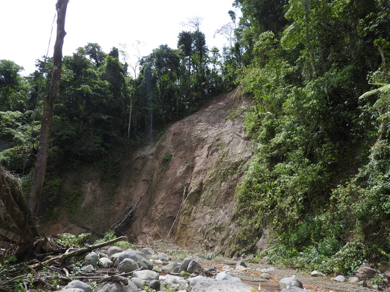 Merci l'ouragan... Pour que notre réparation tienne plus longtemps que lors de la première tentative, nous avons décidé de couler une dalle de béton (dans laquelle j'aurais bien mis le constructeur si je m'étais vraiment appelé Don Eric comme tout le monde le dit ici) et d'utiliser des solives de meilleure facture et enduites d'un produit de protection. Pour faire cela, nous avons fermé la chambre à la location pendant 15 jours. Reste à espérer que les travaux seront finis en heure puisque les visites reprennent le 28 juin.
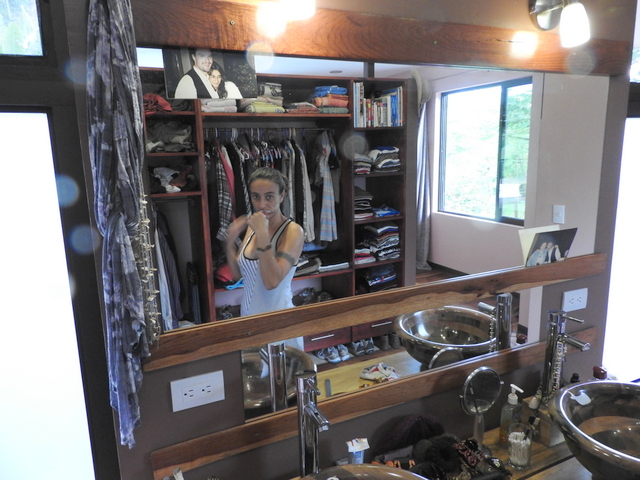 Cécile s'en lave les dents 2017 aura donc été l'année du 'on-refait-tout-ce-qu'on-a-déjà-fait', puisqu'après les barrages, les sentiers en forêt et le cacao, on est contraint de refaire les sols (la 2ème chambre suivra en septembre). Ca nous coûte un pont et ça n'apporte rien. Je dis pas que ça me fait chier, mais j'ai des soupçons...
Nos aventures sont enfin disponibles en format électronique!! Et le Site Commercial: www.Finca-MeiTai.com |
||||||||||||||||||||
|
20/05/2017 - L'été s'achève Yé souis déssolé. Je n'ai pas écrit pendant des lunes, occupé que j'étais à corriger la dernière évolution de la théorie des supercordes. Ma contribution à la physique quantique s'achève, comme l'été donc. Enfin, l'été est une notion un peu floue par ici où la température ne varie guère au cours de l'année. Disons que, vers la mi-mai, arrivent les 'aguaceros' en provenance du Pacifique, marquant la fin de la saison sèche. Il s'agit d'orages violents accompagnés de pluies torrentielles qui nous submergent en fin de journée. Pour les néophytes, c'est assez impressionnant. Il fait en général assez chaud pendant la journée, ce qui permet de plonger dans la piscine à 30/31°C, tout en profitant des grosses gouttes d'eau rafraîchissante envoyées par Dieu lui-même.
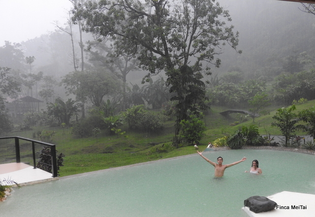 La piscine c'est bien, sous le déluge, c'est mieux! Quand l'orage passe, le ciel est tout propre et l'on peut se promener - en général du côté du Rio Zapote - afin d'apercevoir le majestueux Miravalles dont la silhouette se dessine parfaitement dans la lumière diaphane du jour qui s'achève. Enfin, c'est en tous cas ce que m'inspire la photo ci-après. Pour être honnête, on se promène aussi par là pour inspecter le pont que chaque crue menace d'emporter. Il faut dire que toute cette eau gonfle les ruisseaux et les rivières dans des proportions diluviennes.
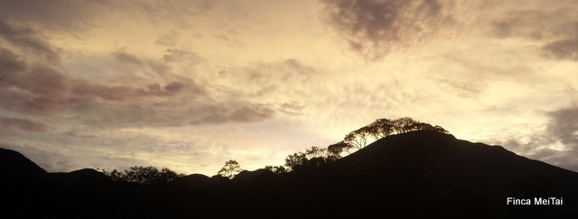 Et ça nous fait des fins de journée lumineuses Dans un registre différent, j'ai réussi à dégoter des écrevisses à 2 pas de Bijagua. Pour être honnête, c'est Chouchou elle-même qui a réussi cet exploit grâce à sa collaboration avec les autres Belges de Bijagua. Je vous passe les détails mais il s'avère que la finca vers laquelle nous envoyons nos visiteurs en quête de 'tour de chocolat' produit également, de manière très artisanale certes, mais qui s'en plaindrait?, ces excellents décapodes. Je me cantonne au côté purement gustatif, seul aspect de ces animaux méconnus que je maîtrise un peu...
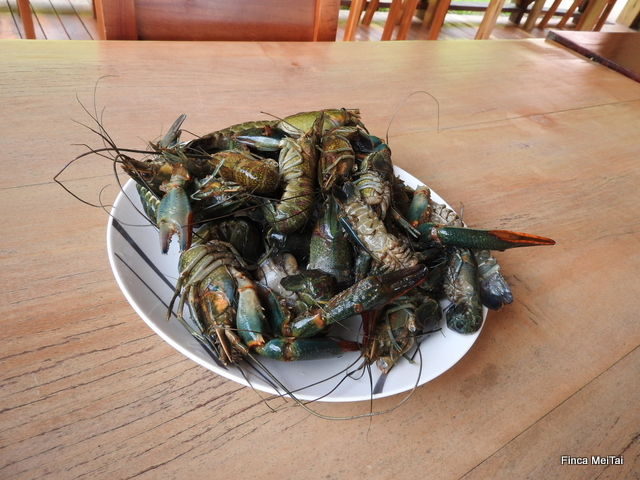 Des écrevisses...Essayez d'en trouver par ici... Pour le reste, tel père, tel fils, Sidney est parvenu à se faire élire vice président des élèves du collège, au terme d'un speech mémorable. Curieux quand même que mon rejeton soit populaire... ça doit venir de sa mère sans doute. A ce propos, je ne sais pas qui de Sidney ou de sa maman était le plus fier de cette performance. Le comité des élèves du collège de Bijagua s'est donné pour premier objectif de trouver et installer des bancs au sein de l'établissement, afin que les élèves ne se vautrent plus par terre, comme c'est le cas actuellement. Depuis lors, je travaille d'arrache pied pour que mon fils puisse respecter sa parole et faire le fier auprès de la gent féminine (seule raison objective selon moi pour s'être investi dans un projet aussi vain).
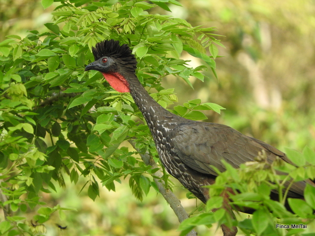 Une Pava (Pénélope panachée) dans un arbre à 15m de la maison Comme nous sommes en pleine construction du 3ème bungalow et que l'ouragan nous a permis d'accumuler pas mal de bois, les conditions sont idéales pour élaborer quelques bancs de récup tout en travaillant à l'élaboration de notre ultime petit nid d'amour pour les visiteurs. Et bonjour à Christelle qui m'a rappelé que je laissait mes lecteurs à l'abandon!
Nos aventures sont enfin disponibles en format électronique!! Et le Site Commercial: www.Finca-MeiTai.com |
||||||||||||||||||||
|
30/03/2017 - Peut-on faire lambris de tout bois? Tout le monde le sait, on peut faire flèche de tout bois, surtout lorsque l'occasion fait le larron. Mais peut-on faire lambris de tout bois? C'est la question que je me posais en regardant songeusement les centaines de troncs qui sèchent dans le lit élargi de la rivière depuis la Catastrophe (l'ouragan Otto pour ceux qui ne suivent pas).
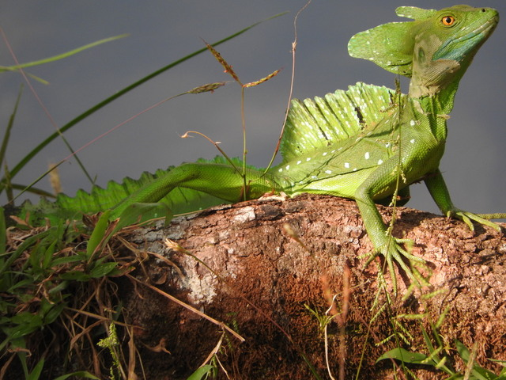 Un lézard basilic Tout ce bois qui pourrit lentement sous mes yeux pourrait me semble-t-il être utilisé à meilleur escient. C'est pourquoi, j'ai désigné un volontaire au hasard dans le tas dans les monceaux d'arbres pour me servir de 'proof of concept'. J'ai mandaté Oscar pour se livrer à un débitage en règle suivi d'un machimbrage (faire des rainures sur la tranche - des mortaises pour les ébénistes).
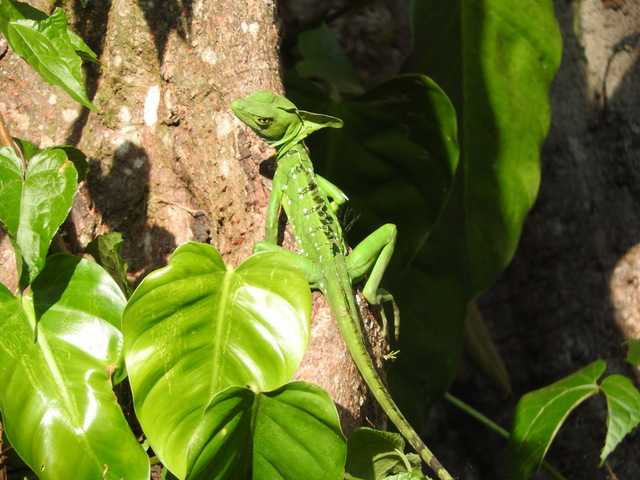 On dirait un faux En attendant la livraison, j'ai repéré un lézard basilic qui glandait près du grand arbre. Je me suis approché en stoemelinks (en catimini, pour les français) afin de le mitrailler par derrière. Ca n'a évidemment pas marché, j'ai été obligé de prendre de magnifiques photos de profil...
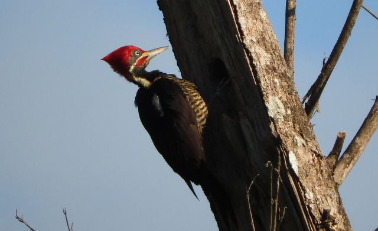 Le pivert, au cerveau ramolli à force de donner des coups de boule Mais je n'étais pas rassasié, j'en voulais plus. Entendant au loin le bruit régulier du toc toc, j'en conclus qu'un pivert devait se faire plaisir dans un Guarumo. De fait, j'avais été précédé par Kenya qui n'a pas hésité à prendre cette photo tellement belle qu'on croirait à un trucage, si nous n'étions pas à la Finca Mei Tai.
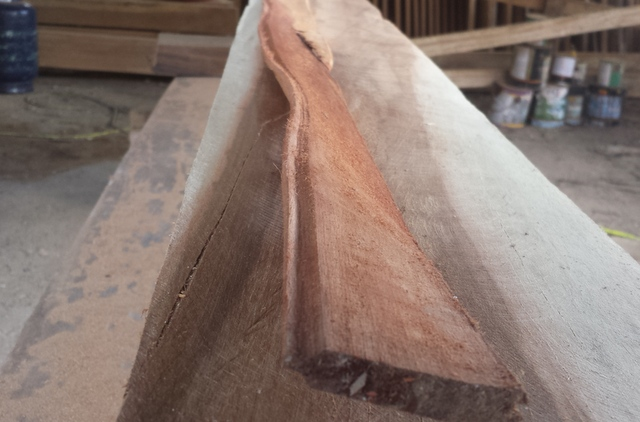 Les lambris sèchent en gondolant Ensuite, j'ai pris livraison de mon lambris que j'ai mis à sécher dans la bodega. J'avais de grands projets pour lui. Maintenant, je connais la réponse à la question du jour: "Non". On ne peut pas faire lambris de tout bois... ou alors il faut être trrrrrrès motivé à la pose..
Nos aventures sont enfin disponibles en format électronique!! Et le Site Commercial: www.Finca-MeiTai.com |
||||||||||||||||||||
|
25/02/2017 - Haute saison La saison touristique bat son plein de Noël à Pâques au Costa Rica. Les visiteurs profitent de la saison sèche pour avoir une idée biaisée de la météo locale. Mais force est d'avouer qu'on s'en moque, du moment qu'on s'amuse. Et puis, c'était un préambule pour justifier l'absence de billet depuis quelques semaines.
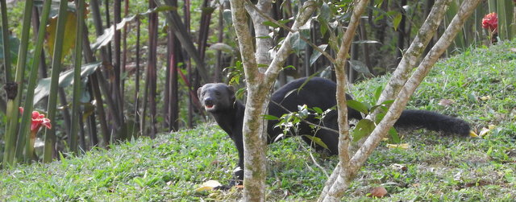 Un Tolomuco C'est qu'il s'en est passé des choses en février! En premier lieu, comme je m'y attendais, j'ai célébré mes 50 ans. Ensuite, l'administration locale a bien voulu m'accorder le droit de résidence au Costa Rica. Si, si, après 3 ans, me voilà ici de plein droit...
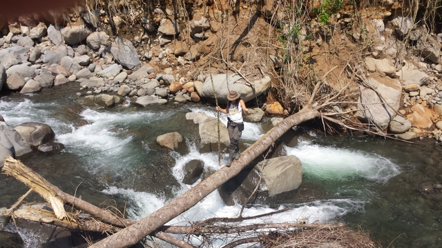 Cécile au-dessus du vide Je n'oublie pas non plus les centaines de touristes qui viennent voir le Rio Celeste et ses eaux bleues. Certains viennent même chez nous et, comme il fait anormalement beau et sec depuis 3 semaines sur le volcan, nous emmenons les intrépides voyageurs dans les coins les plus reculés de la finca.
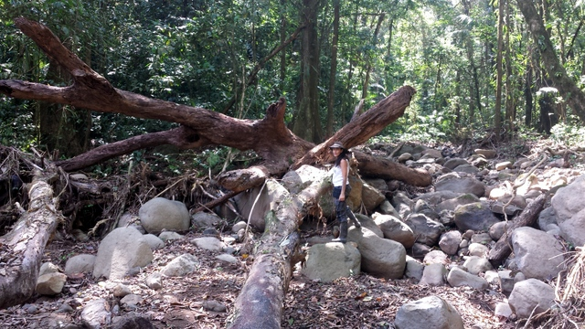 Un des gros tronc charrié par la tempête au sud de la propriété Le chemin ayant été partiellement recouvert de boue lors de la Catastrophe, les clients peuvent en perdre le fil, ce qui fait que je propose mes services d'accompagnateur, guide ornithologique, expert en plantes tropicales, herpétologue et, plus récemment, spécialiste de la survie en milieu hostile.
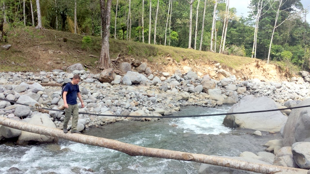 Florent en plein numéro d'équilibriste La promenade devient du coup un peu rock'n roll avec certains passage peu 'balisés' et d'autres plus acrobatiques sur les troncs posés en travers du Rio. Nos visiteurs adorent cela (sauf les serpents qui ne rencontrent qu'un succès d'estime auprès des seuls connaisseurs, un peu comme le cinéma Letton).
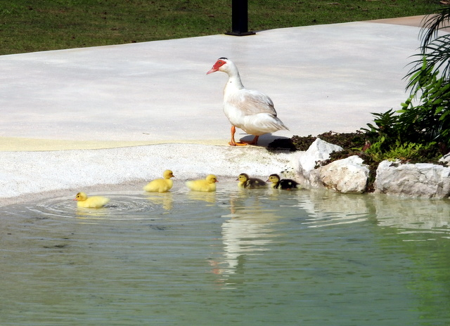 Première piscine pour les canardeaux Et pour le reste, c'est bau. Sans e. Business As Usual. Cécile range et nettoie 24h sur 24 et moi je cherche la fuite dans la piscine et j'essaie de faire pousser ce que j'ai décidé et non pas ce que mère Nature me propose avec un peu de monotonie et d'obstination, il faut bien le dire.
Nos aventures sont enfin disponibles en format électronique!! Et le Site Commercial: www.Finca-MeiTai.com |
||||||||||||||||||||
|
30/01/2017 - Le retour des yéyés En effet, ils sont parmi nous. On n'y prend pas garde, jusqu'à ce qu'on en aperçoive les fruits. Ce matin, en allant travailler à la mine près du barrage, j'ai cru voir un petit ananas. M'approchant, je n'ai pu que tomber en amour devant ce petit fruit frêle croissant en silence.
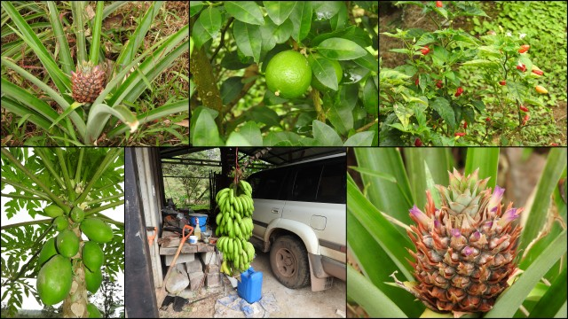 C'est mignon tout plein les petits ananas Savez-vous que pour obtenir un ananas, il vous suffit d'en manger un, puis de déposer son scalp sur le sol avant de l'enfoncer légèrement? C'est une plante qui ne se nourrit pas par le sol mais par l'air. Il convient dès lors d'attendre 2 ans et un nouvel ananas apparaît. C'est de la magie. Et voilà justement deux ans que nous avions planté notre premier ananas-yé! Plus que quelques mois et l'on pourra manger le fruit et perpétuer la lignée en plantant son scalp.
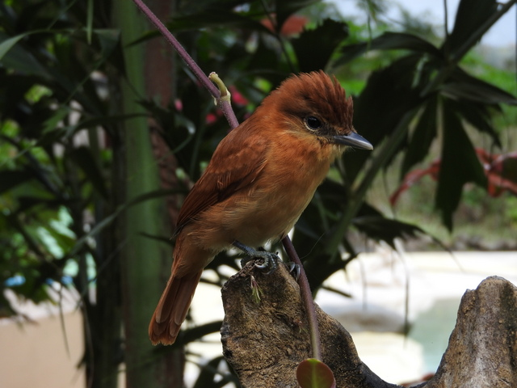 Un petit oiseau Enhardi par ma trouvaille, je fis un tour du côté de notre premier citron-yé planté également voilà 2 ans et... miracle, nous avons aussi notre premier citron vert. J'en ai profité pour inspecter les papa-yés, les piment-yés, les banane-yés et même les aubergin-yés qui, tous, s'apprêtent à nous gaver. Ça, c'est le côté Pura Vida du Costa Rica. En plus, on a une ribambelle d'arbres fruitiers en croissance... Patience! Les carambole-yés, les mangue-yés, les avocat-yés et autres néfli-yés donneront dans quelques ann-yées.
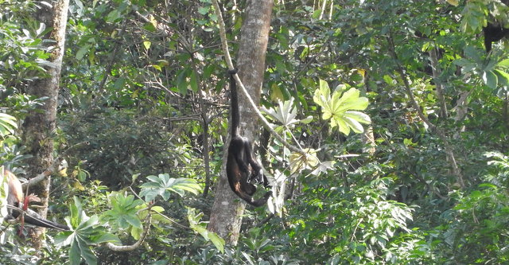 Un singe hurleur fait l'andouille dans un Guarumo Et sinon? Les oiseaux continuent à se dorer la pilule aux quatre coins de la finca. Certains tombent sur nous et notre Nikon, d'autres sur Civette et ses griffes acérées. C'est dommage qu'on n'y connaisse rien car je suis sûr qu'il y a des trucs volants intéressants. Il y a aussi des hordes de singes hurleurs qui viennent faire les idiots sous nos yeux, ne trouvant rien d'autre à faire que de se goinfrer en se tenant par la queue.
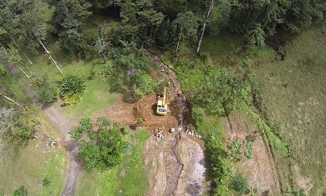 La pelleteuse au travail sur la digue Quand j'ai un moment de libre, j'en profite pour réparer la réparation de la digue de fond de vallée qui jadis retenait l'eau de l'étang du bas. On l'a faite réparer mais, comme prévu, si le gros du travail a été bien fait (et que l'on peut accéder à nouveau à l'autre rive), le détail a été ignoré par Monsieur Pelleteuse, si bien que l'eau ne sort pas par le caniveau prévu à cet effet mais bien par le trop plein mal joint. Je l'ai donc colmaté en espérant que ma réparation tienne...
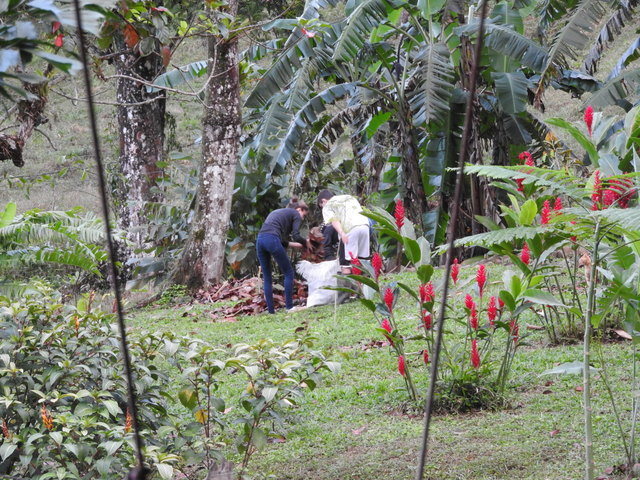 Les enfants au travail Je vous ai laissé une image insolite pour la fin: s'il n'est pas aisé de prendre un toucan ou un aguti en photo, il est encore plus difficile d'avoir les trois enfants au travail, ensemble de surcroit. C'est pourtant ce que Cécile a réussi à faire, aidée par un stratagème vicieux: elle a convaincu les enfants de ramasser les feuilles mortes (d'un tout petit bout de la propriété, rassurez-vous) et en a profité pour immortaliser cet exploit.
Nos aventures sont enfin disponibles en format électronique!! Et le Site Commercial: www.Finca-MeiTai.com |
||||||||||||||||||||
|
18/01/2017 - C'est pourtant facile de ne pas se tromper! De fait, Sidney est né le 15 janvier et entre dans sa 17ème année puisqu'il vient de fêter ses 16 ans. 17ème année, et on est en 2017... ça se recoupe. Comme je le disais, c'est pourtant facile de ne pas se tromper.
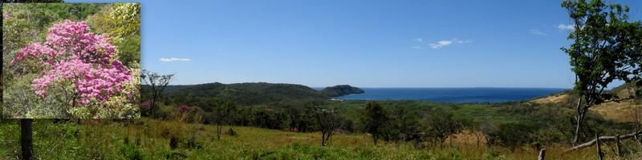 Le lieu (pittoresque) de nos exploits du jour (avec le détail d'un Roble Sabana en fleur) L'air de rien, en janvier, les températures deviennent peu clémentes dans nos montagnes. 19°C, ce matin, à 7h sur le deck. En outre, c'est la saison très haute pour le tourisme. Pour notre plaisir, nous avons décidé de faire un tour à la plage Cabuyal, notre petit coin de paradis au paradis.
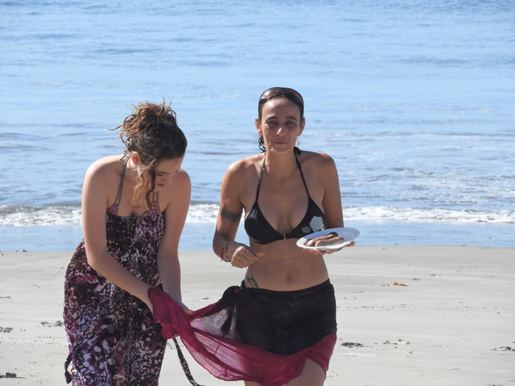 Cécile s'en revient avec des saucisses propres Dans la plaine, la température est nettement plus agréable, de l'ordre de 28/30° et la plage est déserte en pleine semaine. On s'est trimballé tout l'attirail du parfait glandeur des plages pour aller passer un bon moment sur le sable.
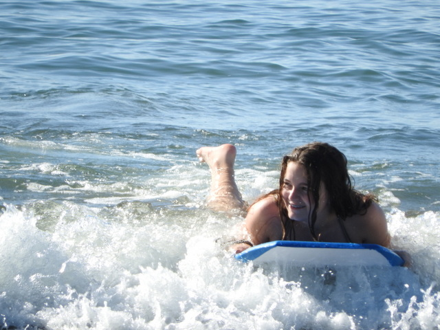 Syr Daria adore Syr Daria s'est fait des sets de vagues jusqu'à épuisement pendant que Kenya essayait d'attraper des poissons à mains nues (toujours pas faite comme nous, la Kenya). Sidney s'entraînait à léviter tout en ayant l'air d'être cool.
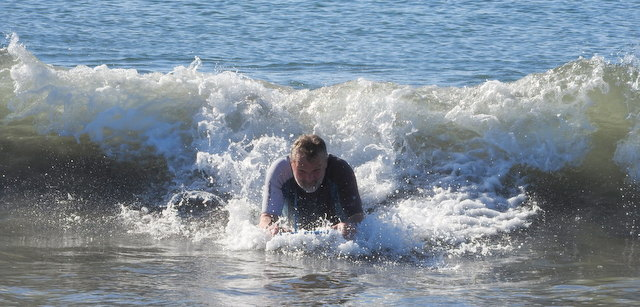 Grande classe Quant à moi, fidèle à mon habitude, je sirotais des bières bien fraîches, assis à table sous les amandiers, tout en surveillant les saucisses du coin de l'oeil. C'est que je suis multi-tâches, moi. Enfin pas tant que ça, en fait.
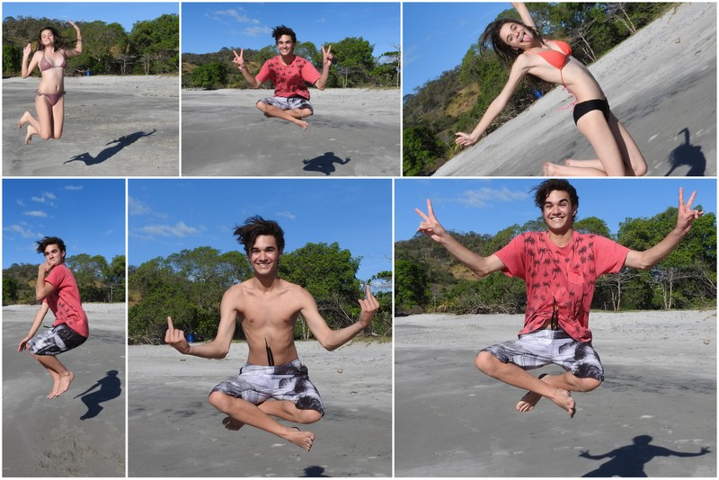 Pêle même de figures improbables Et que faisait Cécile? Elle lavait les saucisses, pardi! Contrairement à mes assertions précédentes, je ne suis pas si multi-tâches que ça puisque, profitant d'un moment d'inattention de ma part, les saucisses ont roulé sur la grille et son tombées dans le sable.
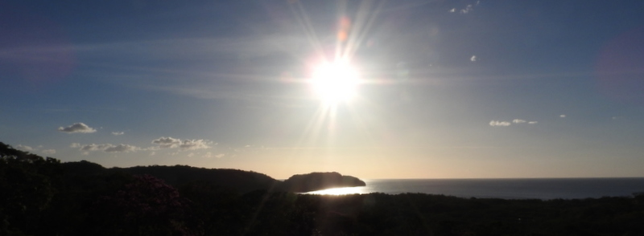 Epanadiplose Cécile s'est dévouée pour aller laver les saucisses à la mer mais, ce faisant, elle n'a pas vu arriver un gros rouleau qui l'a engloutie sous nos yeux ébahis... Du coup, ce sont les saucisses, la maman et son paréo qui ont été lavés par la grande bleue. Nos aventures sont enfin disponibles en format électronique!! Et le Site Commercial: www.Finca-MeiTai.com |
||||||||||||||||||||
|
07/01/2017 - 2017, année de la grenouille Dans le calendrier chinois secret, connu des seuls initiés, nous venons d'entrer dans l'année de la grenouille. D'ailleurs, un dicton ne dit-il pas : "L'an prochain, batracien dans le bassin"? En tous cas, il y avait bel et bien une grenouille dans le bénitier de notre piscine, ce que voyant, Cécile s'empara du filet à papillons pour sauver le prince charmant de la noyade. Les sorcières sont connues pour transformer de preux chevaliers à l'allure avantageuse en vulgaire crapaud. Et seul un baiser peut défaire le maléfice. On ne saura donc jamais si le batracien que Cécile jeta avec dégoût dans la pelouse en était. Embrasser ce truc gluant... faut pas exagérer.
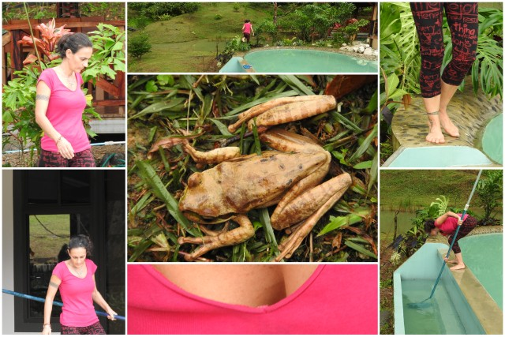 Cécile et le batracien L'année 2017 commence par un saut. Le saut dans l'inconnu, le saut de la grenouille s'écrasant sur la vitre de la porte d'entrée, le seau d'eau que je remplis chaque semaine grâce au déshumidificateur dans la chambre sèche, le sceau de l'immigration qui fait de moi un résident officiel du pays ou le sot qui croit que le travail est une valeur... Allez savoir.
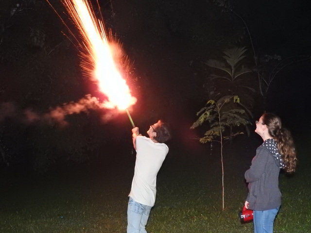 Sidney allume la flamme olympique. Puis le défilé des clients a repris de plus belle, tant et si bien qu'on n'a rien pu faire que les choyer. Ce travail harassant ne m'a pas laissé une minute pour donner de nos nouvelles. Mais cela nous a valu de bonnes rencontres et des moments inoubliables, comme cette reprise surréaliste du tube 'Fanchon' par deux Québécoises non mélangées qui nous ont bien fait rire. Merci Marie-Andrée et Geneviève pour votre agréable visite.
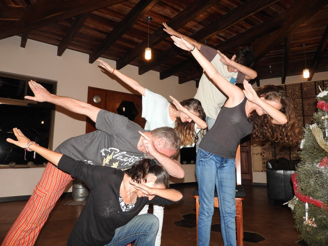 C'est tendance, paraît-il... Par contre, la reprise en main de la finca après le passage d'Otto le Destructeur, s'avère plus ardue que prévue, tant par l'absence de répondant auprès des corps de métier ad hoc que par l'incessante pluie du mois de décembre. Enfin, ça, c'était en 2016. Depuis 2017, les choses s'améliorent. Il pourrait même faire beau d'ici 2 ou 3 ans.
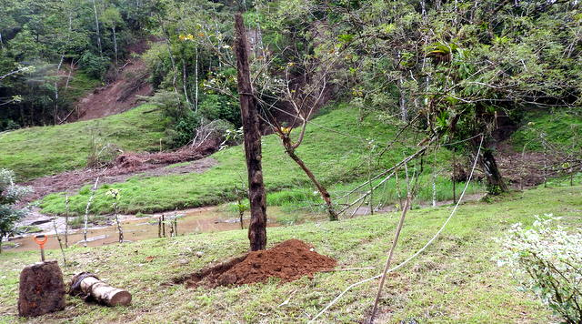 J'ai érigé un totem en mémoire de ce salopard d'ouragan de m... Pour tromper ma patience, je fais comme Hercule: des travaux colossaux. Hier, j'ai une fois encore pu émerveiller Cécile, ma nouvelle femme, avec une érection impressionnante. En effet, au terme de 2 jours d'efforts, j'ai réussi à planter au beau milieu de la pelouse un tronc charrié par le glissement de terrain, à grand renfort de pelles, poulie, cordages et voiture. Ce truc devait être farci de plomb car j'arrivais même pas à en soulever l'une des extrémités. En plus, cet exploit est parfaitement inutile. Mais ne nous plaignons pas, il paraît qu'une vague de froid sévit sur l'Europe.
Nos aventures sont enfin disponibles en format électronique!! Et le Site Commercial: www.Finca-MeiTai.com |
||||||||||||||||||||